Test drivers¶
Analytical velocity models¶
0. Uniform¶
A constant unit velocity field. This should be the ideal setting for the preconditioner.

1. Converging lens¶
One of the models tested in Engquist and Ying’s Sweeping preconditioner for the Helmholtz equation: moving Perfectly Matched Layers.

2. Wave guide¶
Another model tested in Engquist and Ying’s Sweeping preconditioner for the Helmholtz equation: moving Perfectly Matched Layers.

3. Two decreasing layers¶
Two layers stacked on top of each other, where the bottom layer has a velocity which is four times higher than in the top layer.
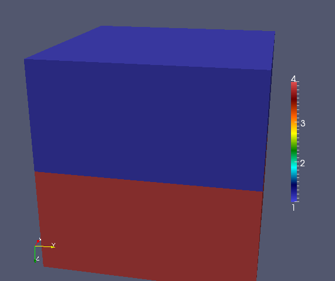4. Two increasing layers¶
Same as above, but the sweep proceeds from the low to high velocity (instead of high to low).
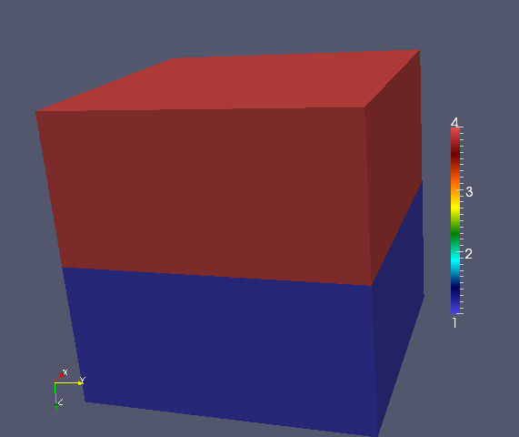5. Two sideways layers¶
Same as the above two models, but there is no gradient in the velocity model in the sweep direction.
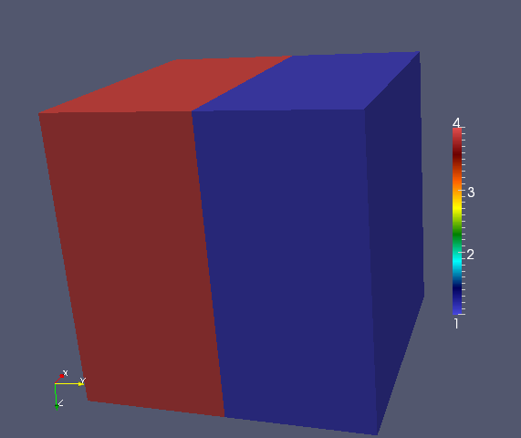6. Five decreasing layers¶
Test the performance of sweeping from low to high velocities.
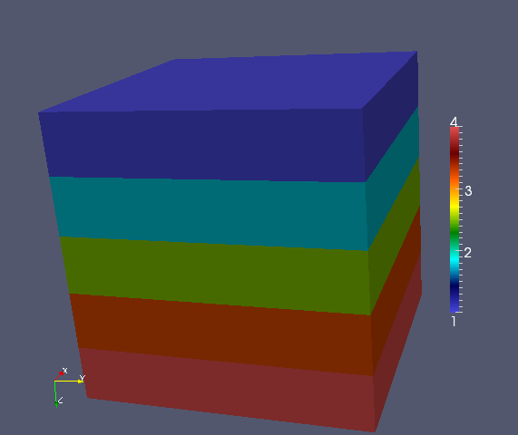7. Five increasing layers¶
Tests the performance of sweeping from high to low velocities. Ideally, the sweeping preconditioner should perform worse on this model than the previous one since the approximated lower half-spaces should have more significant reflections.
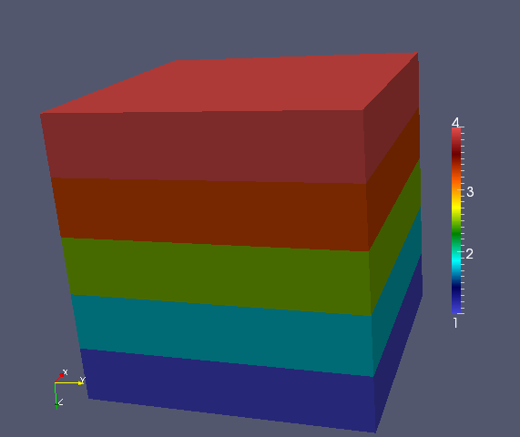8. Five sideways layers¶
Tests a five layer model where each panel is equivalent but heterogeneous.
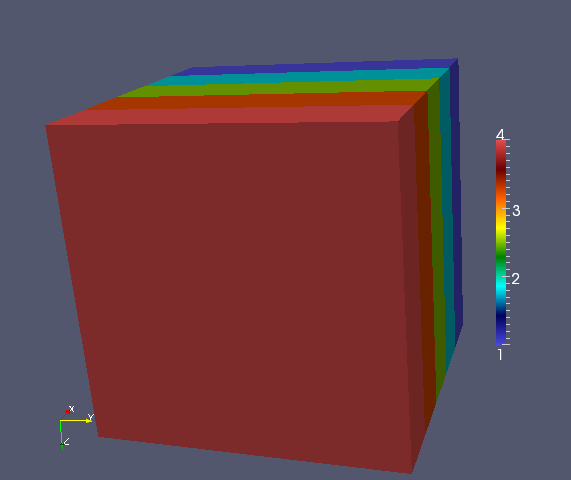

11. Separator¶
A separator with a velocity ten orders of magnitude higher than the rest of the medium is inserted to test the robustness of the preconditioner. Convergence seems to be unaffected by the separator.
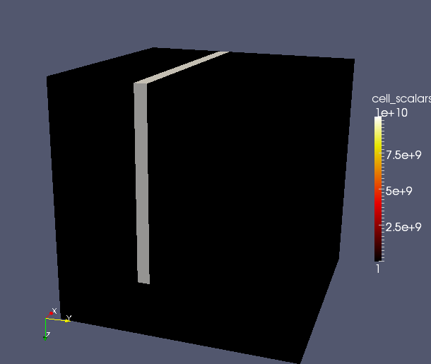12. Cavity¶
A high-velocity outer layer surrounding a low-velocity interior region. Interior rays become trapped within the low-velocity region and cause resonance (resulting in poor performance of the preconditioner).

13. Reverse cavity¶
Meant to show that high velocity contrasts are not the problem: since rays do not become trapped, the preconditioner performs very well on this velocity model.

14. Bottom half of cavity¶
If the cavity is on the bottom half of the domain, sweeping upwards uses approximations which replace the bottom half of the cavity with PML, which ignores strong reflections from rays attempting to jump from the low to high velocity region.

15. Top half of cavity¶
Since PSP sweeps upward from the bottom of the domain to the top, this model should not pose a significant problem since the approximated lower half-space problems do not replace strong with PML.

UnitCube¶
This section describes the driver tests/UnitCube.cpp, which is designed for quickly testing the performance of the sweeping preconditioner on a variety of different velocity models.
Parameters¶
Example usage
UnitCube --model 2 --n 100 --omega 60. --pmlSize 5 --sigma 1.5 --fullViz 1
- model: which velocity field to use, see Analytical velocity models (default is the waveguide model)
- n: size of grid in each dimension (default is 40)
- omega: frequency in rad/sec of problem, \(2 \pi (n/10)\) is a reasonable value (default is 30)
- pmlOnTop: PML if nonzero, Dirichlet otherwise (default is true)
- pmlSize: number of grid points of per PML boundary condition (default is 5)
- sigma: magnitude of complex coordinate-stretching for PML (default is 1.5)
- damping: imaginary frequency shift for preconditioner (default is 7)
- planesPerPanel: number of planes per subdomain (default is 4)
- panelScheme: use traditional scheme if 0, selective inversion if 1 (default is 1)
- fullViz: full volume visualization if nonzero (default is false)
- nbFact: algorithmic blocksize for factorization (default is 96)
- nbSolve: algorithmic blocksize for solves (default is 64)
For each run of the UnitCube driver, four different sets of sources are used:
- A single localized Gaussian centered at \((0.5,0.5,0.1)\).
- Three localized Gaussians, centered at \((0.5,0.5,0.1)\), \((0.25,0.25,0.1)\), and \((0.75,0.75,0.5)\).
- A Gaussian beam centered at \((0.75,0.75,0.5)\) and pointed in the direction \((0.57735,0.57735,-0.57735)\).
- A plane wave pointed in the same direction as the Gaussian beam, but with support in the complement of PML.
Uniform example¶
The following results are gathered from running at 314.16 rad/sec over the uniform velocity model with a \(500 \times 500 \times 500\) grid, via the command:
UnitCube --model 0 --n 500 --omega 314.16 --fullViz 1
which converged to five digits of relative accuracy in 22 iterations of GMRES(20) on 256 nodes of TACC’s Lonestar.
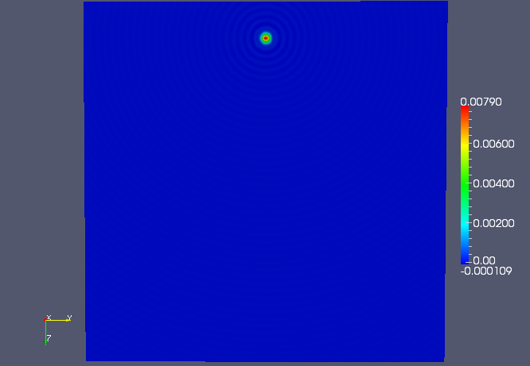The middle YZ plane of the single-shot solution.
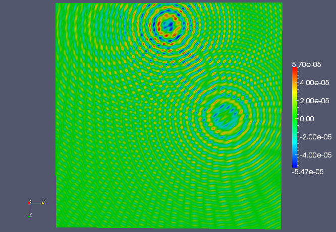A slightly off-center YZ plane (x=0.6) of the three-shot solution.
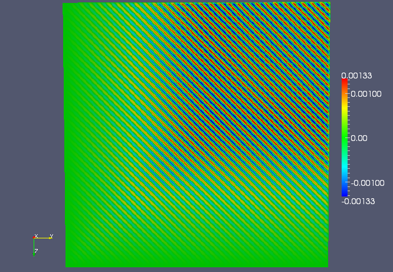The middle YZ plane of the plane wave solution.
Converging lens example¶
This example used the converging lens velocity model at 235.62 rad/sec over another \(500 \times 500 \times 500\) grid, via the command:
UnitCube --model 1 --n 500 --omega 235.62 --sigma 2.0 --fullViz 1
and converged to five digits of relative accuracy in 44 iterations of GMRES(20) on 256 nodes of TACC’s Lonestar.
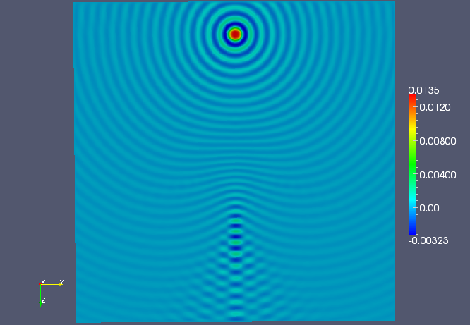The middle YZ plane of the single-shot solution.
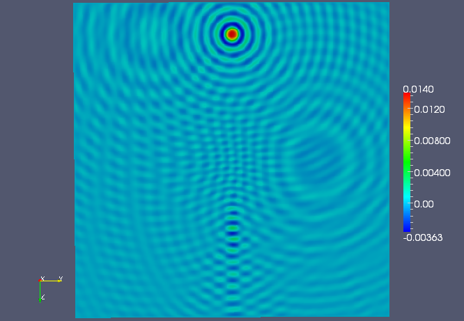The middle YZ plane of the three-shot solution.
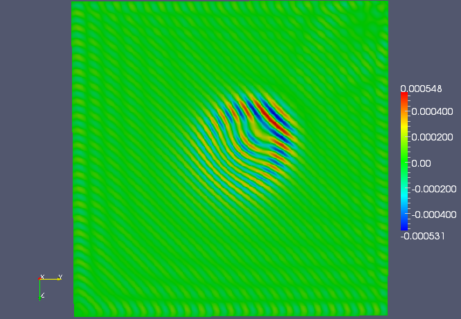The middle YZ plane of the plane wave solution.
Wave guide example¶
This third example uses the wave guide velocity model over a \(500 \times 500 \times 500\) grid, again at 235.62 rad/sec. Using five grid points of PML, with a coordinate-stretching magnitude of 2.0, via:
UnitCube --model 2 --n 500 --omega 235.62 --sigma 2.0 --fullViz 1
and all four residuals converged to five digits of relative accuracy in 52 iterations of GMRES(20) on 256 nodes of TACC’s Lonestar. With six grid points of PML, via:
UnitCube --model 2 --n 500 --omega 235.62 --pmlSize 6 --sigma 2.0 --fullViz 1
the same model converged in 27 iterations.
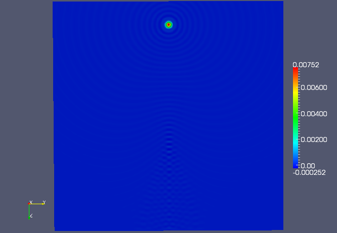The middle YZ plane of the single-shot solution.
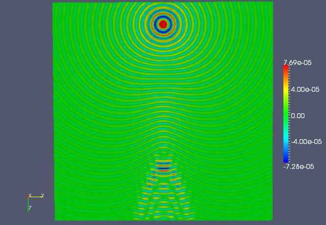An off-center YZ plane (x=0.55) of the single-shot solution.
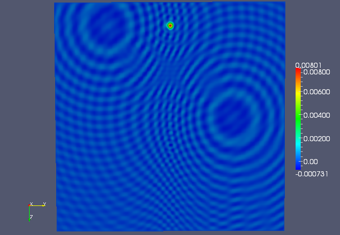The middle YZ plane of the three-shot solution.
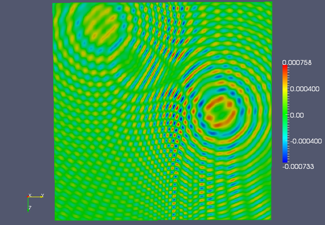An off-center YZ plane (x=0.55) of the three-shot solution.
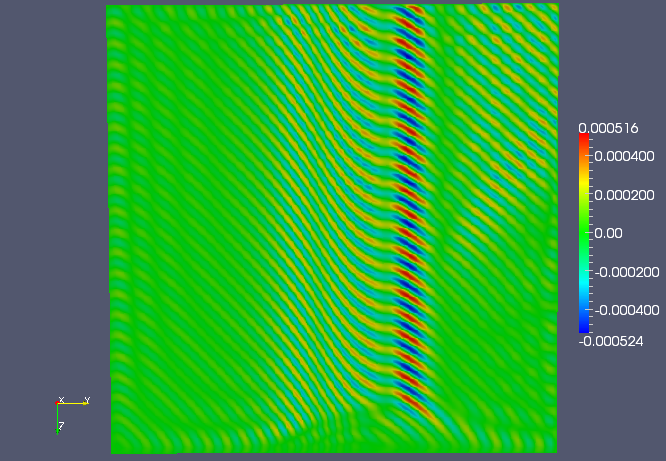The middle YZ plane of the plane wave solution.
Two sideways layers example¶
This example tests a velocity model which is split between a two materials with wave speeds which vary by a factor of four. The grid size was \(500 \times 500 \times 500\), and the frequency was set to 314.16 radians/second. Using a PML magnitude of 4.0, via the command:
UnitCube --model 5 --n 500 --omega 314.16 --sigma 4.0 --fullViz 1
all four residuals converged to five digits of relative accuracy in 48 iterations of GMRES(20) on 256 nodes of TACC’s Lonestar.
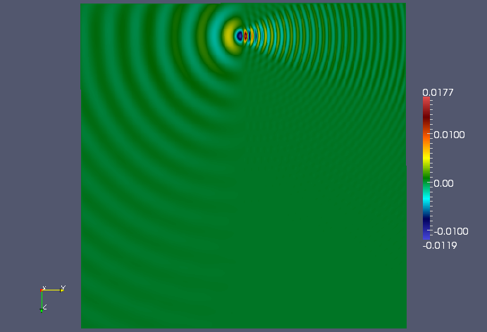The middle YZ plane of the single-shot solution.
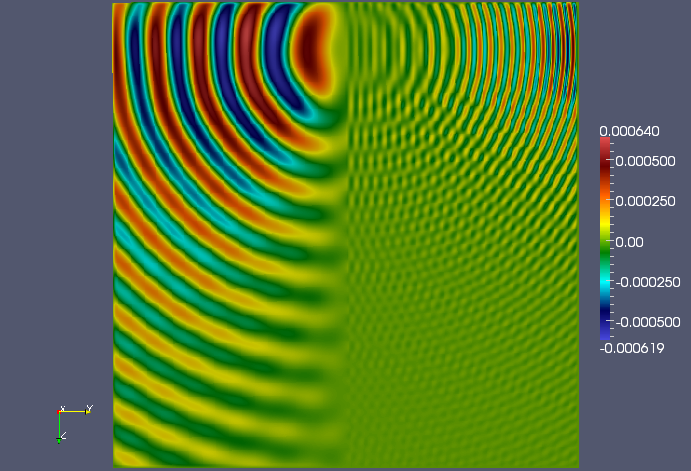An off-center YZ plane (x=0.7) of the single-shot solution.
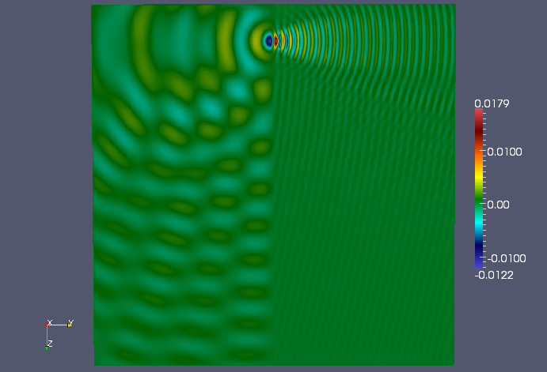The middle YZ plane of the three-shot solution.
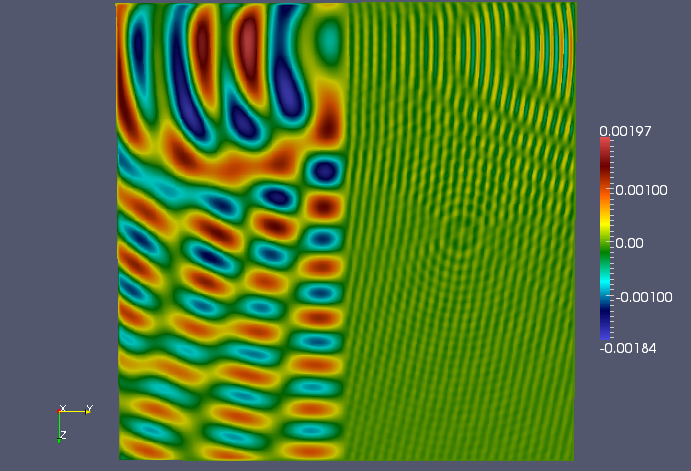An off-center YZ plane (x=0.7) of the three-shot solution.
Wedge example¶
This example tests a velocity model which is split between a three different materials, with the lowest velocity material wedged into the middle. The grid size was \(500 \times 500 \times 500\), and the frequency was set to 471.25 radians/second. Using a PML magnitude of 4.0, via the command:
UnitCube --model 9 --n 500 --omega 471.25 --sigma 4.0 --fullViz 1
all four residuals converged to five digits of relative accuracy in 49 iterations of GMRES(20) on 256 nodes of TACC’s Lonestar.
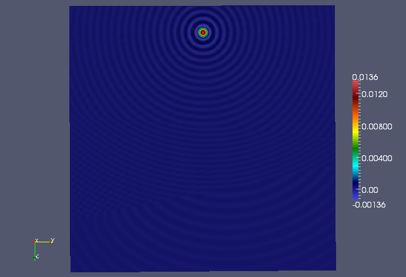The center YZ plane of the single-shot solution.
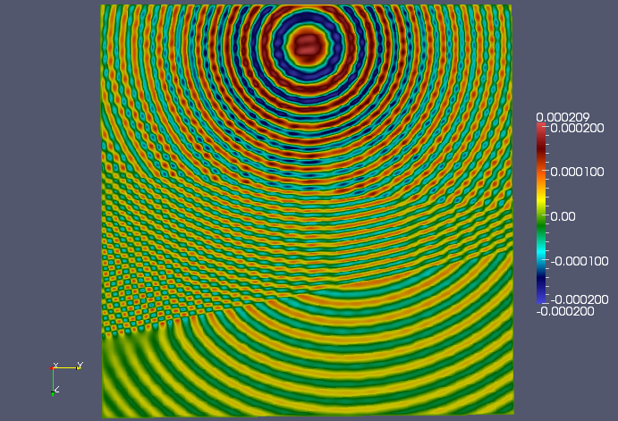An off-center YZ plane (x=0.7) of the single-shot solution.
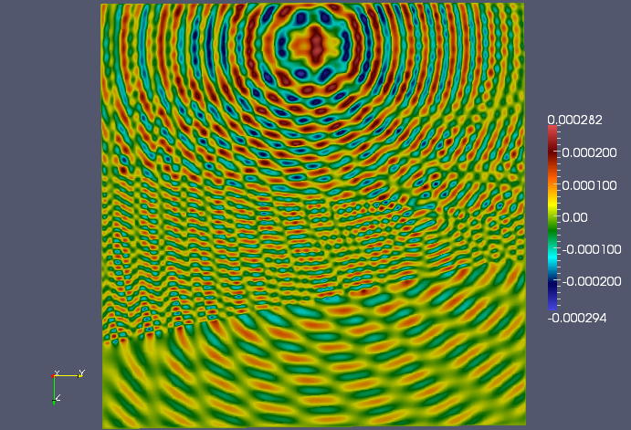An off-center YZ plane (x=0.7) of the three-shot solution.
Separator¶
This example shows that extremely large variations in the velocity field can be harmless: even though there is a “separator” with a velocity which is ten orders of magnitude larger than the background velocity, the sweeping preconditioner converged in only 28 iterations for the 50 wavelength calculation:
UnitCube --model 11 --n 500 --omega 314.16 --sigma 3.0 --fullViz 1
An off-center YZ plane (x=0.7) of the single-shot solution.
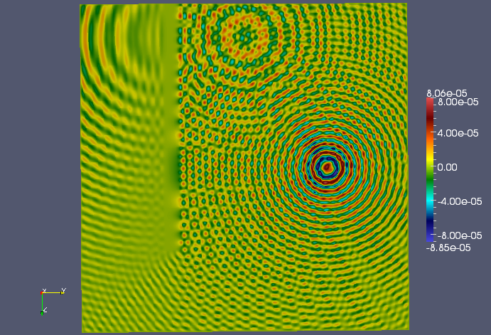An off-center YZ plane (x=0.7) of the three-shot solution.
Interpolate¶
The tests/Interpolate.cpp driver is meant to exercise the routine DistUniformGrid<F>::InterpolateTo(), which provides a means of linearly interpolating a velocity model into a different grid size in parallel.
Parameters¶
Example usage
Interpolate --model 2 --m1 30 --m2 30 --m3 30 --n1 40 --n2 40 --n3 40
- model: see Analytical velocity models (default is waveguide model)
- m1, m2, m3: original grid size (default values are 30)
- n1, n2, n3: interpolated grid size (default values are 40)
TODO: Show some results.